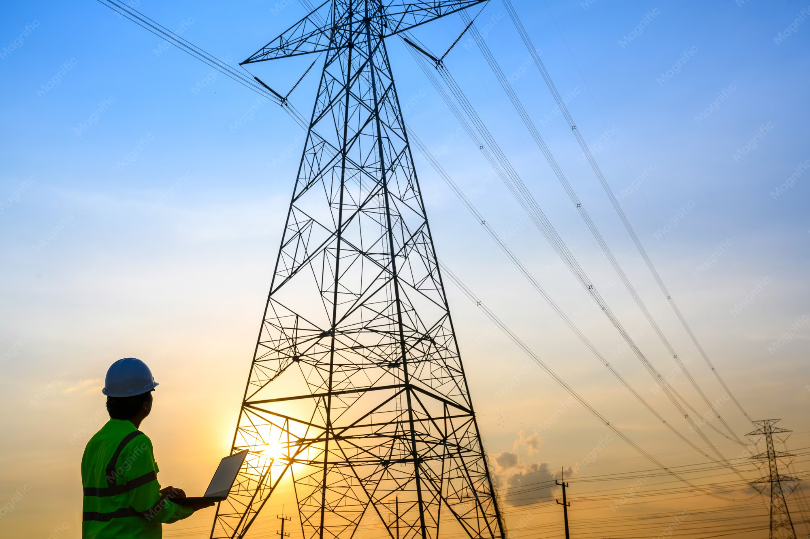
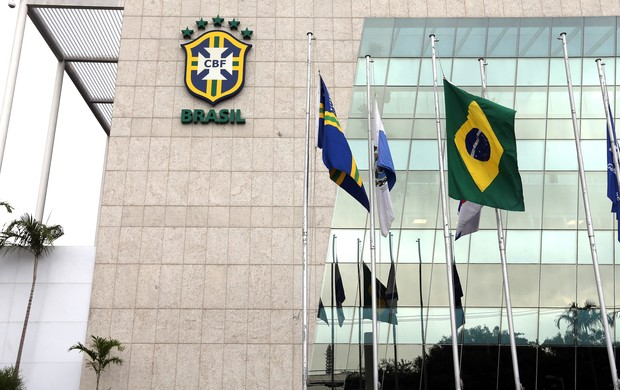

GridShield usa dados orbitais de satélites em tempo real para prever tempestades geomagnéticas e proteger redes elétricas críticas antes do impacto.
Ejeções de Massa Coronal (CMEs) lançam bilhões de toneladas de plasma solar em direção à Terra. Ao atingir o campo magnético terrestre, geram Correntes Induzidas Geomagneticamente (GICs) nas linhas de transmissão de alta tensão — sobrecarregando transformadores com calor, causando explosões e apagões em cascata.
Um evento como o Carrington de 1859 hoje resultaria em apagões simultâneos em mais de 40 países e prejuízos superiores a US$ 2 trilhões. Hospitais, comunicações, transporte e abastecimento de água seriam paralisados por meses.
O GridShield conecta dados satelitais a decisões automáticas na rede elétrica. Quatro camadas tecnológicas atuam em sequência:
NASA/NOAA no ponto Lagrangiano L1, a 1,5M km da Terra. Detecta CMEs com até 72h de antecedência.
Modelos gaussianos, logarítmicos e de potência calculam velocidade do vento solar e Índice Kp em tempo real.
O sistema cruza projeções com banco de subestações georreferenciadas e classifica o nível de risco por região.
Subestações são desenergizadas antes do impacto. Após o pico, o religamento é coordenado pela telemetria satelital.
Processar dados do satélite DSCOVR no ponto L1 para identificar ejeções de massa coronal até 72 horas antes do impacto.
Calcular o Índice Kp projetado e estimar as Correntes Induzidas (GICs) por linha de transmissão usando funções matemáticas.
Recomendar e executar o isolamento preventivo das subestações mais vulneráveis identificadas no banco georreferenciado.
Monitorar o decaimento do campo geomagnético pós-pico e autorizar o religamento cadenciado da rede com segurança máxima.
Garantir a continuidade do abastecimento energético para populações, hospitais e sistemas essenciais, contribuindo para o Objetivo de Desenvolvimento Sustentável 9 da ONU: Indústria, Inovação e Infraestrutura resiliente.
O GridShield é uma infraestrutura de software B2G e B2B com impacto direto na população global.

Concessionárias e operadores de redes de transmissão que precisam proteger transformadores de alta potência e garantir a continuidade do serviço.

Ministérios de energia, defesa civil e agências espaciais que necessitam de planos nacionais de resiliência para eventos de clima espacial extremo.
Hospitais, sistemas de água, comunicações e transporte que dependem de energia ininterrupta e são os mais impactados por apagões prolongados.
Geofísicos, engenheiros elétricos e cientistas espaciais que utilizam os dados modelados para aprimorar a compreensão do clima espacial.
Solução puramente em software — sem custo de hardware adicional para as operadoras.
Manutenção de serviços essenciais em hospitais e zonas de emergência durante eventos extremos.
APIs públicas da NASA, NOAA e ESA — sem dependência de fontes proprietárias pagas.
Modelos matemáticos validados (gaussiana, logarítmica, potência, exponencial) para alta precisão.
O religamento pós-tempestade é guiado por telemetria — sem risco de novo dano ao religar.
Do alerta orbital ao religamento da rede — o GridShield atua em três fases distintas:
O sensor no ponto L1 detecta o aumento anômalo da velocidade do vento solar. O GridShield recebe os dados via API e inicia o cálculo do Índice Kp projetado.
Com Kp previsto acima de 7, o sistema envia alertas às operadoras e recomenda o isolamento preventivo das subestações vulneráveis mapeadas no banco georreferenciado.
Após o pico da tempestade, o decaimento exponencial do Kp é monitorado. Quando Kp cai abaixo de 4, o GridShield coordena o religamento cadenciado, região por região.
Selecione uma das três paletas de cores disponíveis para a interface.